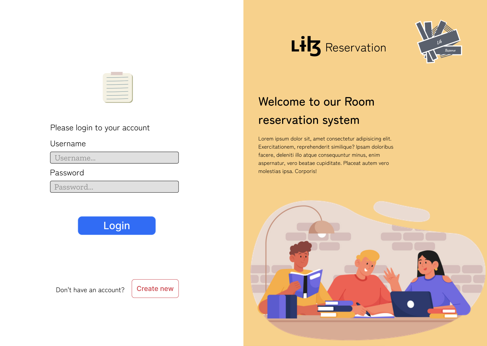

Room Reservation Website
Web-based room reservation system with clean UI and basic booking flow.
View ProjectHi, I'm
Computer Engineering student and AI/ML learner. I work on practical projects and I'm learning web and app development to make my work easy to use and easy to share.
I'm Sai Hae Naing Lay, a Computer Engineering student based in Thailand. I enjoy learning and building practical systems through hands-on projects.
My main interests are AI/ML and computer vision, and I'm currently learning web and app development to create simple, usable interfaces for my work.
I like turning real-world data into useful tools by building clean pipelines, clear UI, and solutions that can be tested in practice.
Web-based room reservation system with clean UI and basic booking flow.
View ProjectMobile app UI for login, book list, and borrow request with simple user flow.
View ProjectVoice commands to play/stop/switch ads in real time with auto demo fallback mode.
View ProjectDetects faces and matches IDs to a database, showing "matched" or "no data" on a dashboard.
View ProjectHuman action recognition system using classical image processing techniques. Includes preprocessing, segmentation, feature extraction, and classification with a Python-based workflow.
View Project
Developed a computer vision system to classify cow behaviors (standing, lying, grazing, mounting) from video data to support automated estrus detection. Built an end-to-end pipeline including dataset construction, Roboflow annotation, YOLO training, and evaluation on real farm CCTV footage.
View ProjectFull-stack ordering system integrated with LINE Messaging API featuring user authentication, role-based dashboards (user/shop/admin), real-time order management, points reward system, and rich menu integration. Built with Express backend and Supabase database.
View ProjectNotes on designing a simple reservation UI, validating inputs, and keeping the layout responsive.
How I organized login, book list, and borrow request screens to keep the app simple and readable.
Notes on handling voice commands reliably, switching ads in real time, and auto-detecting video folders.
Pipeline notes: detect faces, extract ID, match with database, and show "matched / no data" on the UI.
Step-by-step notes: preprocessing, segmentation, feature extraction, and classification in a Python workflow.
Practical tips I use: labeling consistency, augmentation, metrics (precision/recall), and debugging failure cases.
haenainglay20@gmail.com
+66 655298515
Chiang Mai, Thailand
Availability: Flexible